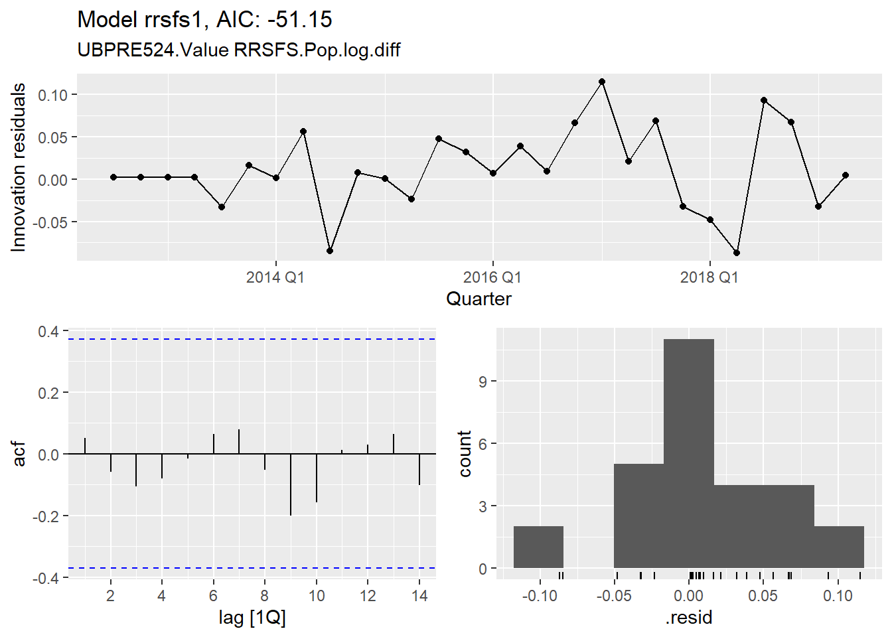
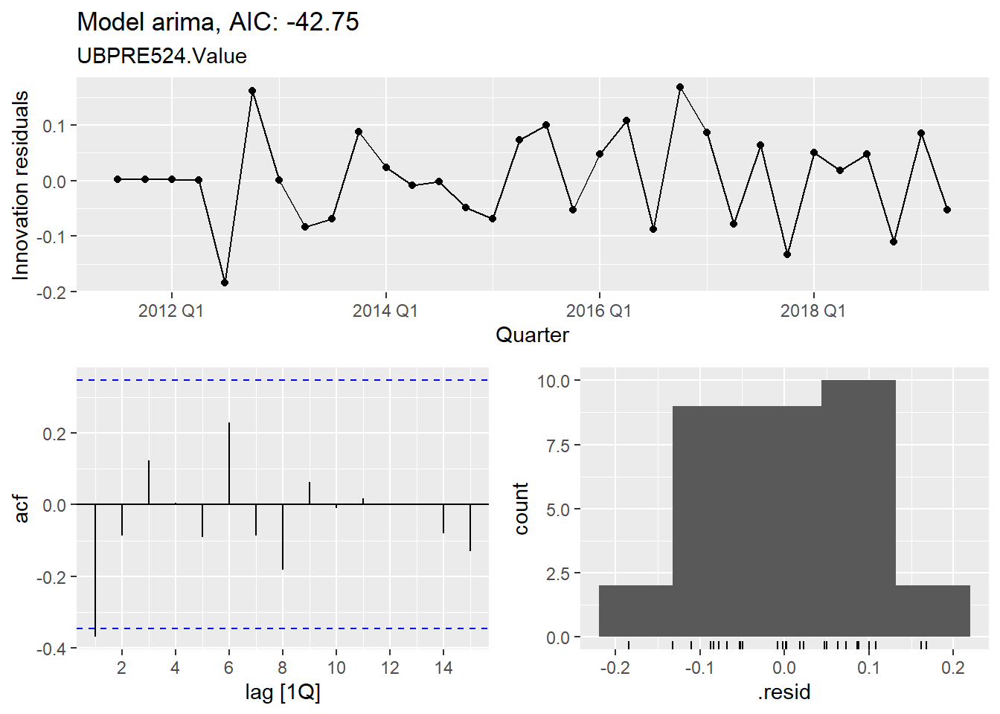

arima <- "UBPRE524.Value"
# Real Advance Retail and Food Services Sales per capita
rrsfs1 <- as.formula("UBPRE524.Value ~ RRSFS.Pop.log.diff")
rrsfs2 <- as.formula("UBPRE524.Value ~ RRSFS.Pop.log.diff.lag1")
rrsfs3 <- as.formula("UBPRE524.Value ~ RRSFS.Pop.log.diff + RRSFS.Pop.log.diff.lag1")
rrsfs4 <- as.formula("UBPRE524.Value ~ RRSFS.Pop.log.diff + RRSFS.Pop.log.diff.lag1 + RRSFS.Pop.log.diff.lag2")
rrsfs5 <- as.formula("UBPRE524.Value ~ RRSFS.Pop.log.diff + RRSFS.Pop.log.diff.lag1 + RRSFS.Pop.log.diff.lag2 + RRSFS.Pop.log.diff.lag3")
# Unemployment Rate
unrate1 <- as.formula("UBPRE524.Value ~ UNRATE.log.diff")
unrate2 <- as.formula("UBPRE524.Value ~ UNRATE.log.diff.lag1")
unrate3 <- as.formula("UBPRE524.Value ~ UNRATE.log.diff + UNRATE.log.diff.lag1")
unrate4 <- as.formula("UBPRE524.Value ~ UNRATE.log.diff + UNRATE.log.diff.lag1 + UNRATE.log.diff.lag2")
unrate5 <- as.formula("UBPRE524.Value ~ UNRATE.log.diff + UNRATE.log.diff.lag1 + UNRATE.log.diff.lag2 + UNRATE.log.diff.lag3")
# Consumer Debt Service Payments as a Percent of Disposable Personal Income
debt1 <- as.formula("UBPRE524.Value ~ CDSP.log.diff")
debt2 <- as.formula("UBPRE524.Value ~ CDSP.log.diff.lag1")
debt3 <- as.formula("UBPRE524.Value ~ CDSP.log.diff + CDSP.log.diff.lag1")
debt4 <- as.formula("UBPRE524.Value ~ CDSP.log.diff + CDSP.log.diff.lag1 + CDSP.log.diff.lag2")
debt5 <- as.formula("UBPRE524.Value ~ CDSP.log.diff + CDSP.log.diff.lag1 + CDSP.log.diff.lag2 + CDSP.log.diff.lag3")
# Household Debt Service Payments as a Percent of Disposable Personal Income
debth1 <- as.formula("UBPRE524.Value ~ TDSP.log.diff")
debth2 <- as.formula("UBPRE524.Value ~ TDSP.log.diff.lag1")
debth3 <- as.formula("UBPRE524.Value ~ TDSP.log.diff + TDSP.log.diff.lag1")
debth4 <- as.formula("UBPRE524.Value ~ TDSP.log.diff + TDSP.log.diff.lag1 + TDSP.log.diff.lag2")
debth5 <- as.formula("UBPRE524.Value ~ TDSP.log.diff + TDSP.log.diff.lag1 + TDSP.log.diff.lag2 + TDSP.log.diff.lag3")
# Loans to Individuals for Household, Family, and Other Personal Expenditures:Credit Cards
portfolio1 <- as.formula("UBPRE524.Value ~ UBPRB538.pct_change + UBPRB538.pct_change.lag1")
portfolio2 <- as.formula("UBPRE524.Value ~ UBPRB538.log.diff + UBPRB538.log.diff.lag1")
portfolio3 <- as.formula("UBPRE524.Value ~ UBPRB538.log.diff + UBPRB538.log.diff.lag1 + UBPR3815.log.diff")
portfolio4 <- as.formula("UBPRE524.Value ~ UBPRB538.log.diff + UBPR3815.log.diff")
#Group Trend
group1 <- as.formula("UBPRE524.Value ~ UBPRE524.all.log.diff + UBPRE524.group.log.diff")
group2 <- as.formula("UBPRE524.Value ~ UBPRE524.group.log.diff")
# Combinations (use Auto ARIMA)
comb1 <- as.formula("UBPRE524.Value ~ RRSFS.Pop.log.diff + UNRATE.log.diff + UNRATE.log.diff.lag1")
comb2 <- as.formula("UBPRE524.Value ~ RRSFS.Pop.log.diff + RRSFS.Pop.log.diff.lag1 + UNRATE.log.diff + UNRATE.log.diff.lag1")
comb3 <- as.formula("UBPRE524.Value ~ RRSFS.Pop.log.diff + RRSFS.Pop.log.diff.lag1 + UNRATE.log.diff + UNRATE.log.diff.lag1 + UNRATE.log.diff.lag2")
comb4 <- as.formula("UBPRE524.Value ~ RRSFS.Pop.log.diff + UNRATE.log.diff + UNRATE.log.diff.lag1 + UBPRB538.log.diff")
comb5 <- as.formula("UBPRE524.Value ~ CDSP.log.diff + CDSP.log.diff.lag1 + UBPRB538.log.diff")
# Combinations (don't use Auto ARIMA)
manual1 <- as.formula("UBPRE524.diff ~ 1 + RRSFS.Pop.log.diff + RRSFS.Pop.log.diff.lag1 + UBPRB538.log.diff + pdq(1, 0, 0) + PDQ(0,0,0)")
manual2 <- as.formula("UBPRE524.diff ~ 1 + RRSFS.Pop.log.diff + RRSFS.Pop.log.diff.lag1 + UBPRB538.log.diff + pdq(1, 0, 0) + PDQ(1,0,0)")
manual3 <- as.formula("UBPRE524.diff ~ 1 + UNRATE.log.diff + UNRATE.log.diff.lag1 + UBPRB538.log.diff + pdq(1, 0, 0) + PDQ(0,0,0)")
manual4 <- as.formula("UBPRE524.diff ~ 1 + UNRATE.log.diff + UNRATE.log.diff.lag1 + UBPRB538.log.diff + pdq(1, 0, 0) + PDQ(1,0,0)")
manual5 <- as.formula("UBPRE524.diff ~ 1 + CDSP.log.diff + CDSP.log.diff.lag1 + UBPRB538.log.diff + pdq(1, 0, 0) + PDQ(0,0,0)")
manual6 <- as.formula("UBPRE524.diff ~ 1 + CDSP.log.diff + CDSP.log.diff.lag1 + UBPRB538.log.diff + pdq(1, 0, 0) + PDQ(1,0,0)")
manual7 <- as.formula("UBPRE524.diff ~ 1 + RRSFS.Pop.log.diff + UNRATE.log.diff + UNRATE.log.diff.lag1 + UBPRB538.log.diff + pdq(1, 0, 0) + PDQ(0,0,0)")
manual8 <- as.formula("UBPRE524.diff ~ 1 + RRSFS.Pop.log.diff + UNRATE.log.diff + UNRATE.log.diff.lag1 + UBPRB538.log.diff + pdq(1, 0, 0) + PDQ(1,0,0)")
manual9 <- as.formula("UBPRE524.diff ~ 1 + TDSP.log.diff + B069RC1.Pop.CPI.log.diff.lag1 + UBPRB538.log.diff.lag2 + UBPRB538.log.diff.lag3 + UBPR3815.log.diff + RRSFS.Pop.log.diff + pdq(1, 0, 0) + PDQ(1,0,0)")7 Linear Regression with AR Errors
We will use the Auto ARIMA (Automatic ARIMA) tool from the R ‘forecast’ package to determine the optimal set of parameters (\(p\), \(d\), \(q\))(\(P\),\(D\),\(Q\))[\(s\)] for our model. Auto ARIMA streamlines the process by using a stepwise search to navigate through the model space, aiming to identify the model that achieves the lowest AICc value. The AICc, or Akaike Information Criterion corrected, is a metric that evaluates the fit of a model by balancing its likelihood against its complexity, with adjustments for smaller sample sizes.
Where:
- \(p\),\(d\),\(q\) are the non-seasonal components (autoregressive order, differencing order, and moving average order, respectively),
- \(P\),\(D\),\(Q\) are the seasonal components of the model, with similar definitions but applied on a seasonal cycle, and
- \(s\) is the length of the seasonal cycle in time units. Quarterly data with an annual cycle have ‘s=4’.
Our approach begins with basic ARIMA modelling to predict future values solely based on historical data without explanatory variables.
Next, to see if we can improve the models (one model for each bank series), we introduce explanatory variables, while also correcting for autocorrelation within the error terms. This transforms the models into a Linear Regression with AR Errors.
We examine the AICc values of models across various categories of explanatory variables, including Expenditure, Unemployment, Consumer and Household Debt, Portfolio, and Group Trend. This analysis aims to identify explanatory variables that we can combine. This also takes into consideration insights from the data exploratory phase, as well as insights from other modelling techniques such as XGBoost Factor Analysis (see Figure 9.4).
7.1 Model selection
Note: using the undifferenced value for Credit Card Plans-30-89 DAYS P/D % as the Auto Arima process will perform the differencing if optimal.
7.1.1 Models
Code
run_arima <- function(estimation_data) {
## 1. Expenditure
m_table1 <- estimation_data |>
fabletools::model(
arima = ARIMA(UBPRE524.Value),
rrsfs1 = ARIMA(rrsfs1),
rrsfs2 = ARIMA(rrsfs2),
rrsfs3 = ARIMA(rrsfs3),
rrsfs4 = ARIMA(rrsfs4),
rrsfs5 = ARIMA(rrsfs5)
)
save_arima_results(m_table1, get_model_cols(m_table1, key_vars(estimation_data)),glue("arima_rrsfs_results.csv"))
## 2. Unemployment
m_table2 <- estimation_data |>
model(
unrate1 = ARIMA(unrate1),
unrate2 = ARIMA(unrate2),
unrate3 = ARIMA(unrate3),
unrate4 = ARIMA(unrate4),
unrate5 = ARIMA(unrate5)
)
save_arima_results(m_table2, get_model_cols(m_table2, key_vars(estimation_data)),glue("arima_unrate_results.csv"))
## 3.1 Debt Consumer
m_table3.1 <- estimation_data |>
model(
debt1 = ARIMA(debt1),
debt2 = ARIMA(debt2),
debt3 = ARIMA(debt3),
debt4 = ARIMA(debt4),
debt5 = ARIMA(debt5)
)
save_arima_results(m_table3.1, get_model_cols(m_table3.1, key_vars(estimation_data)),glue("arima_debt_results.csv"))
## 3.2 Debt Household
m_table3.2 <- estimation_data |>
model(
debth1 = ARIMA(debth1),
debth2 = ARIMA(debth2),
debth3 = ARIMA(debth3),
debth4 = ARIMA(debth4),
debth5 = ARIMA(debth5)
)
save_arima_results(m_table3.2, get_model_cols(m_table3.2, key_vars(estimation_data)),glue("arima_debth_results.csv"))
## 4. Portfolio
m_table4 <- estimation_data |>
model(
portfolio1 = ARIMA(portfolio1),
portfolio2= ARIMA(portfolio2),
portfolio3= ARIMA(portfolio3),
portfolio4= ARIMA(portfolio4),
)
save_arima_results(m_table4, get_model_cols(m_table4, key_vars(estimation_data)),glue("arima_portfolio_results.csv"))
## 5. Group
m_table5 <- estimation_data |>
model(
group1 = ARIMA(group1),
group2= ARIMA(group2)
)
save_arima_results(m_table5, get_model_cols(m_table5, key_vars(estimation_data)),glue("arima_group_results.csv"))
## 6. Combinations
m_table6 <- estimation_data |>
model(
comb1= ARIMA(comb1),
comb2= ARIMA(comb2),
comb3= ARIMA(comb3),
comb4= ARIMA(comb4),
comb5= ARIMA(comb5)
)
save_arima_results(m_table6, get_model_cols(m_table6, key_vars(estimation_data)),glue("arima_other_results.csv"))
## 7. Manual
m_table7 <- estimation_data |>
model(
manual1= ARIMA(manual1),
manual2= ARIMA(manual2),
manual3= ARIMA(manual3),
manual4= ARIMA(manual4),
manual5= ARIMA(manual5),
manual6= ARIMA(manual6),
manual7= ARIMA(manual7),
manual8= ARIMA(manual8),
manual9= ARIMA(manual9)
)
save_arima_results(m_table7, get_model_cols(m_table7, key_vars(estimation_data)),glue("arima_manual_results.csv"))
}
run_arima(estimation_data)7.1.2 Results
We can see that for our sub-set of banks the top models are very different.
- Capital One’s model has no AR errors and is equivalent to the Market model.
- American Express’s model does not have any AR coefficients but is sensitive to seasonal AR errors.
- The ar1 Error for Barclays and Citibank have a high level of uncertainty (std.error). The p.value (P>0.05) indicating ar1 is not significant.
Code
arima_results <- read_arima_results()
best_bank_models <- tibble(bank = unique(estimation_data$BankName)) |>
mutate(model_details = lapply(bank, best_bank_model, estimation_data, arima_results))
bank = "CITIBANK"
print_top_bank_model(bank, arima_results)Table 7.1:
Ordered Top 10 Best-Worst model by AICc
Code
print_coeff(bank, best_bank_models)Table 7.2:
Top Model coefficients
Code
bank = "SYNCHRONY"
print_top_bank_model(bank, arima_results)Table 7.3:
Ordered Top 10 Best-Worst model by AICc
Code
print_coeff(bank, best_bank_models)Table 7.4:
Top Model coefficients
Code
bank = "BARCLAYS"
print_top_bank_model(bank, arima_results)Table 7.5:
Ordered Top 10 Best-Worst model by AICc
Code
print_coeff(bank, best_bank_models)Table 7.6:
Top Model coefficients
Code
bank = "AMERICAN EXPRESS NATIONAL BANK"
print_top_bank_model(bank, arima_results)Table 7.7:
Ordered Top 10 Best-Worst model by AICc
Code
print_coeff(bank, best_bank_models)Table 7.8:
Top Model coefficients
Code
bank = "CAPITAL ONE"
print_top_bank_model(bank, arima_results)Table 7.9:
Ordered Top 10 Best-Worst model by AICc
Code
print_coeff(bank, best_bank_models)Table 7.10:
Top Model coefficients
7.1.3 Top Model Estimated Fit
Code
bank_aug_data <- best_bank_models |>
mutate(augdata = map(model_details, ~ .x$Augmented)) |> unnest(augdata) |>
dplyr::select(BankName:last_col())
bank_aug_data |>
filter(BankName %in% observation_data$BankName) |>
as_tsibble(index = Quarter, key=c(BankName)) |> plot_model_fit("UBPRE524.diff")
7.1.4 Residual diagnostics
Residuals should have the following properties (Hyndman and Athanasopoulos 2021, ch. 5.4). Residuals:
- Are uncorrelated. Correlations indicate that the model is missing information left in the residuals.
- Have zero mean. If they have a mean other than zero, then the forecasts are biased.
- Have constant variance i.e. does not violate “homoscedasticity” assumption.
- Are normally distributed.
Code
bank <- "CITIBANK"
plot_bank_residuals(bank, best_bank_models)Code
bank <- "SYNCHRONY"
plot_bank_residuals(bank, best_bank_models)
Code
bank <- "BARCLAYS"
plot_bank_residuals(bank, best_bank_models)Code
bank <- "AMERICAN EXPRESS"
plot_bank_residuals(bank, best_bank_models)Code
bank <- "CAPITAL ONE"
plot_bank_residuals(bank, best_bank_models)
7.1.4.1 Residuals White Noise
The sub-set of banks analysed in Section 7.1.4 did not exhibit significant autocorrelation.
Table 7.11 lists banks where we reject the null hypothesis of the Ljung–Box test, indicating the presence of significant autocorrelation in the residuals.
Banks not listed have residuals that are indistinguishable from a white noise series i.e. have uncorrelated observations and with constant variance.
Code
bank_aug_data |> as_tsibble(index=Quarter, key = BankName) |>
features(.innov, ljung_box) |> mutate(across(where(is.numeric), \(x) round(x,4))) |>
filter(lb_pvalue <= 0.05)|> dplyr::select(BankName,lb_stat,lb_pvalue) |>
rmarkdown::paged_table()Table 7.11:
Ljung–Box results where P-value < Significance Level of 0.05
7.2 Time Series Cross-Validation
Selecting the best model for each bank, we use one-step ahead cross-validation to assess their performance on unseen data. The outcomes, detailed in Table 7.12, reveal that, with the exception of Capital One, the models underperform compared to the Market model (see Table 6.4). This discrepancy suggests that the models are overfitting, meaning they have learned the training data too well, capturing noise rather than the underlying signal, which diminishes their predictive accuracy on new, unseen data. To reduce overfitting we may have to look at simpler models i.e. those with higher AICc but fewer parameters.
Code
bank_models <- best_bank_models |>
mutate(model = map(model_details, ~ .x$BankModel))
bank_top_formulas <- best_bank_models |>
mutate(formula = map(model_details, ~ .x$Formula))
bank_models$model |> map(fabletools::accuracy) |> list_rbind() |> readr::write_csv("data/results/estimate_arima_metrics.csv")
# Timeseries CV
do_arima_cv <- function(bankname, formulas, estimation_data, init = 5) {
tryCatch({
selected_formula <- formulas |> filter(bank == bankname) |> pluck("formula",1)
filtered_data <- estimation_data |> filter(BankName == bankname)
est_data_tr <- filtered_data |>
stretch_tsibble(.init = init, .step = 1) |>
relocate( .id)
step_data_tr <- filtered_data |>
dplyr::slice(init+1:n()) |> mutate(.step = row_number()) |>
relocate(.step) |>
group_by(.step) |> nest(data = -c(.step,UBPRE524.diff)) |>
rename("new_data" = "data") |> dplyr::select(-UBPRE524.diff)
nested_data <- est_data_tr |>
group_by(.id) |>
nest(data = -.id) |> left_join(step_data_tr, by = join_by(.id == .step)) |>
drop_na(new_data)
results <- nested_data |>
mutate(model = map(data, ~model(.x, ARIMA(!!selected_formula))),
forecast = map(model, forecast, new_data = new_data, bootstrap=TRUE, times=100))
results$forecast |> map(fabletools::accuracy, filtered_data) |>
list_rbind() |> readr::write_csv(glue("data/results/tscv/estimate_tscv_arima_{bankname}.csv"))
}, error = function(e) {
print(glue::glue("cv error for {bankname}: {e}"))
})
}
unique(estimation_data$BankName) |> walk(\(x) do_arima_cv(x, bank_top_formulas, estimation_data))Code
val_results <- get_summary_validation.arima(unique(observation_data$BankName))
val_results$tbl1 |> rmarkdown::paged_table()
val_results$tbl2 |> rmarkdown::paged_table()
val_results$tbl3 |> rmarkdown::paged_table()Table 7.12: Comparing Accuracy Metrics for Training and Cross-Validation data
(a)
Accuracy Metrics on Training and Cross Validation data for sub-set of banks
(b)
Mean Accuracy Metrics for our sub-set of banks
(c)
Mean Accuracy Metrics across all banks
7.3 Prediction

7.4 Abnormal Results
Code
print_ar(result, "Costco", "AMERICAN EXPRESS NATIONAL BANK (1394676)")
print_ar(result, "Costco", "CITIBANK, N.A. (476810)")
print_ar(result, "Walmart", "SYNCHRONY BANK (1216022)")
print_ar(result, "Walmart", "CAPITAL ONE, NATIONAL ASSOCIATION (112837)")
print_ar(result, "GAP", "SYNCHRONY BANK (1216022)")
print_ar(result, "GAP", "BARCLAYS BANK DELAWARE (2980209)")Table 7.13: Credit Card Plans-30-89 DAYS P/D %: Abnormal Returns (original scale)
(a)
Costco (Old) - AMERICAN EXPRESS NATIONAL BANK (1394676)
(b)
Costco (New) - CITIBANK, N.A. (476810)
(c)
Walmart (Old) - SYNCHRONY BANK (1216022)
(d)
Walmart (New) - CAPITAL ONE, NATIONAL ASSOCIATION (112837)
(e)
GAP (Old) - SYNCHRONY BANK (1216022)
(f)
GAP (New) - BARCLAYS BANK DELAWARE (2980209)